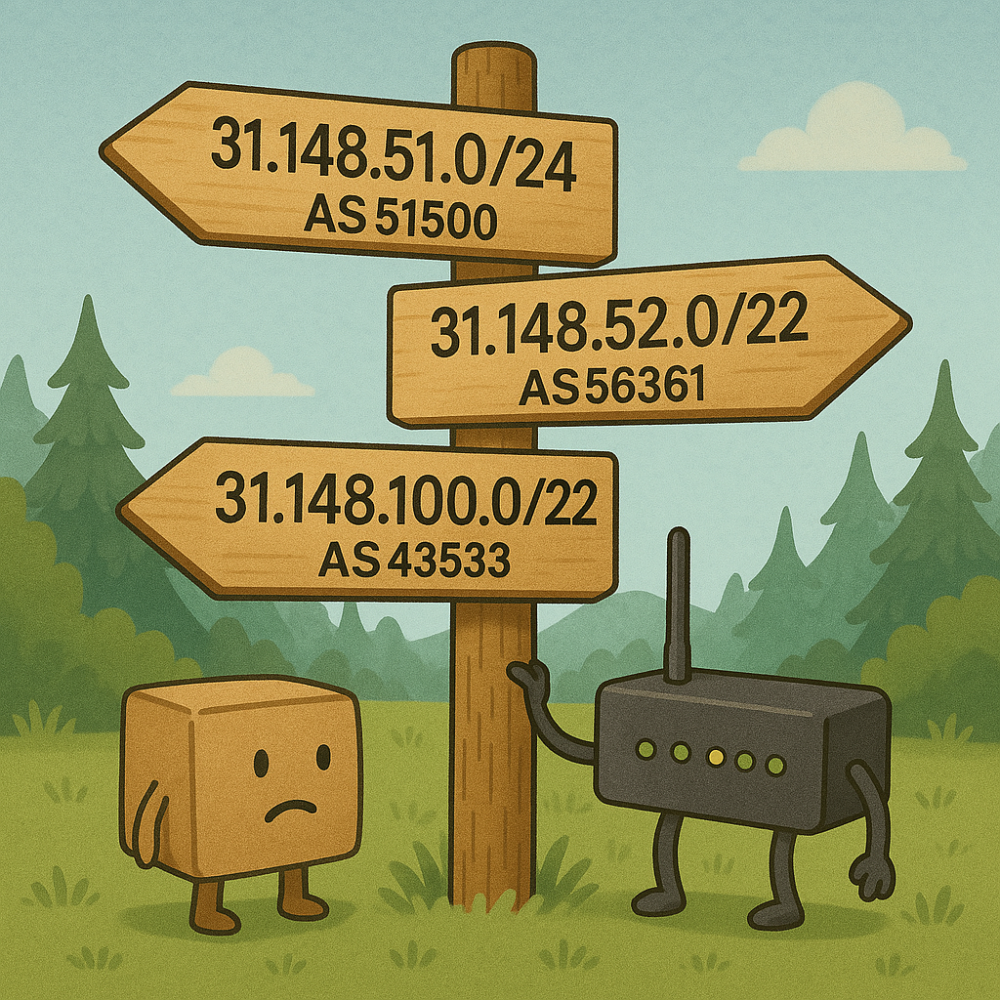
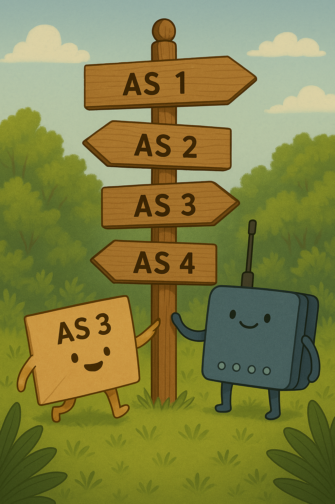
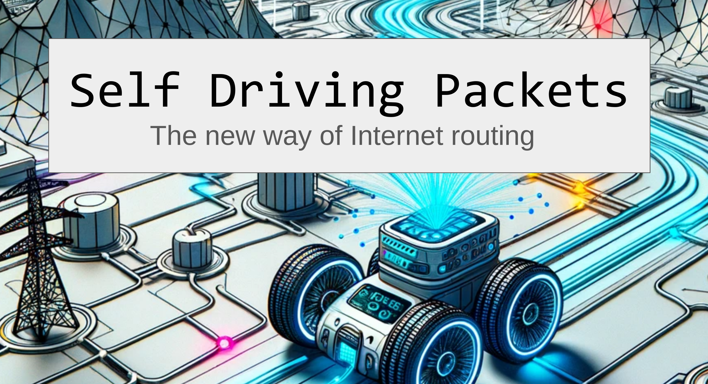

📦 Self Driving Packets!?!
April 1st, 2025
It's time to make life easier for the Internet's postmen-- yes, you heard that right! These digital couriers have a tough job keeping track of all the countless routes across the Internet, and there's a lot to remember.
Disclaimer: I'm not a BGP expert, and not everything here may be entirely realistic-- but I hope you enjoy the read nonetheless! :)

But guess what? Fragmentation and aggregator inflexibility aren’t the real issues. The real culprit, it turns out, is that packets are just too lazy. They rely on external help (routers, BGP peers) and never take responsibility for their own journey. That ends today.
Imagine a future where the Internet says goodbye to the thousands of BGP updates streaming into every router on the planet. Instead, we ask:
Why not give packets the route themselves?
Why fill routers with path knowledge when we can simply embed that knowledge inside each packet? Then the packets can “drive” themselves from source to destination.
Key idea: We take the AS path from BGP, compress it nicely, and tuck it directly into the packet, e.g. through a new IPv6 extension header. Let’s call it the Path Header. Each “self-driving” packet now knows exactly which route to follow. Routers become simpler-- they just follow the instructions that the packet is carrying around!
+---------------+----------------+------------------------+
| IPv6 header | Path header | TCP header + data |
| | | |
| Next Header = | Next Header = | |
| Path | TCP | |
+---------------+----------------+------------------------+
+-+-+-+-+-+-+-+-+-+-+-+-+-+-+-+-+-+-+-+-+-+-+-+-+-+-+-+-+-+-+-+-+
| Next Header | Path Len | |
+-+-+-+-+-+-+-+-+-+-+-+-+-+-+-+-+ +
| |
. .
. AS Path .
. .
| |
+-+-+-+-+-+-+-+-+-+-+-+-+-+-+-+-+-+-+-+-+-+-+-+-+-+-+-+-+-+-+-+-+
Next Header 8-bit selector. Identifies the type of header
immediately following the Path
header. Uses the same values as the IPv4
Protocol field [IANA-PN].
Path Len 8-bit unsigned integer. Length of the
Path header in 8-octet units,
not including the first 8 octets.
AS Path Variable-length field, of length such that the
complete Path header is a multiple of 8 octets long.How It Works
Route Updates: Whenever an Autonomous System (AS) learns a new route (say 2001:db8::/32), it sends an “update” not to all its neighbors, but to a hierarchical Internet Routing System (IRS)
DNS + IRS: We already store domain names in DNS, so let’s store our IP routing data in a parallel, DNS-like system (the “IRS”). This hierarchical structure might look something like:
RIR Server
├── AFRINIC
├── APNIC
├── ARIN
├── LACNIC
└── RIPE NCC
└── 2001:db8::/32 -> Origin AS1
Path from (AS6): [6,5,3,1]
(AS1)
^ \
| \
| \
(AS2)--(AS3)
^ ^
| |
| |
(AS4) (AS5)
\ /
\ /
(AS6)Path Lookup: When you want to send a packet to 2001:db8::1, you do a “route query” (similar to a DNS lookup) to the IRS, retrieving the best path from your AS 6: AS 6 -> AS 1. Due to link parameters, we assume the best path in this case is [6,5,3,1].
Self-Driving Packet: Armed with that path, your packet sets the “Path Header” to [6,5,3,1], then sets out on its journey. At each hop, the router strips the leading AS from the path (since you’ve “arrived” there) and forwards it to the next AS. Eventually, it reaches the destination.
No more monstrous BGP updates on every router. No more different views of the Internet from every router. Instead, each packet is responsible for carrying its own routing instructions.
A Quick Example
You want to send a packet to 2001:db8::1:
You ask DNS: “Which IP is example.org?” DNS says 2001:db8::1.
You ask the IRS: “Which path do I take to get to 2001:db8::1?” IRS says “[6,5,3,1]”Form the Self-Driving Packet:
IPv6 header: Destination = 2001:db8::1
Path Header: Next Header = TCP, Path = [6,5,3,1]
TCP + Data: "Hello, 2001:db8::1"Off It Goes: The router in AS5 sees it has “5” at the top of the path, recognizes itself, pops off “5,” sees the next is “3,” and forwards the packet to AS3.

Arrival: AS1 sees “1” in the path, pops it off, and says, “We’re home. Deliver the data.”
🗺️ The IRS : A Distributed Map for the Internet
Conceptually, the Internet Routing System (IRS) functions like a distributed graph-- an Internet path version of Google Maps. Instead of highways and backroads, the IRS tracks AS interconnections and constantly updates their traffic conditions (link health, congestion, costs). When your device queries the IRS, it’s essentially asking for the best path from your origin AS to a destination AS, taking real-time conditions into account. Just like a mapping service might reroute you around an accident, the IRS can dynamically steer packets around a failing link or overloaded AS.
🏗️ Handling Failovers: A Detour on the Self-Driving Highway
One of the biggest questions in a self-driving packet world is: what happens when a link or AS in the path suddenly becomes unavailable? Does the packet just get stuck, never to be seen again, or can it magically detour?
- Link Goes Down Mid-Transit
- Scenario: Your packet has a path6,5,3,1. It’s happily cruising from AS5 to AS3, but halfway there, the link between AS5 and AS3 fails.
- Outcome: The router in AS5 sees that the path says “next hop AS3,” but the link is dead. Since the packet’s instructions are effectively “go to AS3”, the router can’t magically choose an AS as a backup unless it knows that’s valid-- and in this self-driving model, the router is deliberately designed not to hold global route knowledge.- What Now?
- Local Error Return: The router in AS5 returns an ICMPv6 error to the source, saying “Destination Unreachable - No Route to Destination” This signals the sending host that it needs to fetch a new route from the IRS.
- IRS Update: Meanwhile, upon detecting a downed link, AS5 or AS3 notifies the IRS (“Hey, that segment is toast!”). The IRS then updates its records, marking the path with AS3 as temporarily unavailable.
- Re-Query the Path: The sender receives the error, contacts the IRS again, and gets a shiny new path
6,4,2,1. It then crafts a revised self-driving packet that bypasses the dead link. - Result: No more “stuck” packets. They do get turned around, but they can quickly re-route once a new path is fetched. The tradeoff: increased reliance on that centralized IRS for real-time path availability.
- What Now?
- Can the Router Itself Fetch a New Path?
- “Emergency Detour” Flag: One might imagine a special bit in the Path Header that tells routers, “If something breaks, please help me out by querying the IRS on my behalf.” This would allow the router to perform an on-the-fly re-lookup if the link to the next AS is down, rather than sending an ICMPv6 error all the way back to the source.
- Abuse Concerns: The downside is that if routers can freely re-query the IRS, a malicious router could reroute traffic to an expensive or compromised AS. This could facilitate hijacking or forced toll paths. Without tight security and cryptographic checks, letting routers steer the packet raises trust and integrity questions.
- Pay-Me-Now Problem: Another practical catch is who pays for the new route? If the router decides to re-route your packet via a premium path, does the sender get unexpectedly billed? Or does the router eat the cost (unlikely!), thereby encouraging “accidental” detours?
- Compromise Approach: In a more controlled scenario, the sending host could specify “local detour allowed” within certain constraints (e.g., “Don’t pick any path more than 10% higher in cost”). This maintains the spirit of self-driving packets while offering a safety valve for sudden link failures—at least until more advanced cryptographic and economic safeguards are invented.
- What Stops an On-Path Router from Rewriting the Path?
- In today’s comedic April 1st scenario, not much! A malicious AS along the route could theoretically rewrite your path to something more profitable for them or direct traffic into a black hole.
- The serious fix: cryptographic signatures and integrity checks. Each AS path entry could be signed by the IRS or by each legitimate AS. This way, if an AS tries to modify the path, the signature breaks and the packet is discarded or flagged. Of course, designing a robust cryptographic scheme that doesn’t balloon the packet size is an open challenge-- but hey, that’s tomorrow’s problem!
💸 The Economic Side: Tolls on the Packet Autobahn
In the traditional BGP-based Internet, ISPs exchange routes and settle costs through peering agreements, transit fees, or local preferences-- arrangements that typically happen behind the scenes. With self-driving packets, though, the door opens for new methods on creating revenue from path selection and offer different payment models.
- Pay-Per-Route or Vignette/Flat Fee
- You pay ASes directly for passing traffic.
- With a “Vignette” (toll label) you might have a flat monthly or annual cost, but for specific ASes (or a set). If your traffic crosses multiple different ASes.
- Scope: You’re effectively negotiating (or prepaying) for routes beyond your immediate ISP. You control the entire path selection and pay along the way.
- Old-School “Pay-Your-ISP”
- You only pay your local ISP, and they handle any downstream settlement or tolling with other ASes.
- If you want a “fast lane,” you might pay your ISP a small premium, but they still decide which upstream networks to buy capacity from.
- Scope: You’re outsourcing all path decisions (and billing relationships) to one provider, just as we do in the traditional Internet model.
- Practical Mechanics
- At Packet Creation: When you query the IRS (Internet Routing System) for a path, you also learn the fees each AS might charge. You can decide whether to pay for the scenic (avoid certain countries, ASes) route or opt for the cheapest path.
- In-Packet Payment/Authorization: The packet header could carry proof you’ve either paid already (under a flat plan) or have the right to pay as you go. Routers can check that “digital toll tag” before letting packets zoom forward. If a packet’s credentials don’t match up, that packet might slow to a crawl-- or get turned away altogether.
- Why It’s Lucrative
- Revenue Upside: ISPs could offer premium fast lanes, emergency routes, or bundling deals. Enterprises might be willing to pay for guaranteed reliability and speed-- no more best-effort paths.
- Competition: Smaller networks can compete by offering cheaper or niche paths, while larger networks can flex their robust infrastructure with premium pricing. The end result could be a more dynamic marketplace, where path selection is no longer an invisible afterthought but a strategic decision by the user or application.
Benefits (It’s April 1st, So Why Not Dream Big?)
- Reduced Router Complexity: Routers become glorified packet forwarders. Instead of storing the entire Internet’s route table, they only know their direct neighbors/handle a single line at a time from the “AS Path” carried by each packet.
- Built-In Path Engineering: Since the path is spelled out in the packet, you can pick whichever route you prefer. Want to avoid congested ASes? Just pick a scenic route—like
AS 5 -> AS 6 -> AS 4 -> AS 2 -> AS 1.
Potential Pitfalls (Because Even an April Fools’ Dream Isn’t Perfect)
-
The IRS must see the entire Internet - Under BGP, each router maintains its own perspective of the global routing table, continuously updated by routes it learns from neighbors. It only needs to store and compute routes relevant to the traffic it might forward.
With a centralized or semi-distributed IRS, the system itself takes on the huge responsibility of storing all possible AS interconnections (or at least a large chunk of them). This creates a massive scaling challenge: the more the Internet grows, the more the IRS must store, update, and process to deliver accurate paths on demand.
The dream of simplifying routers by moving complexity into the IRS might just shift the burden elsewhere, raising questions of how to handle replication, fault tolerance, data consistency, and query speed at Internet scale.
-
There is no alternative to the extension header in IPv6 for IPv4.
- Packet Overhead: If you’re routing across 10+ ASes, you might see some extra header bytes. But with our ever-increasing bandwidth, who cares about a few more bytes?
- DNS vs. IRS: Merging DNS with this new IRS might raise eyebrows. Sure, it’s an extra step in your name resolution (first domain name, then route), but, the the overhead is limited to the initial data transmission for which the IRS lookup happens. The following packets can follow the same path.
- Security: Wait, so the packet can lie about its path? Possibly. Also, IRS as a central identity opens up new possibilities for abuse. But we can dream up fancy cryptographic solutions later. This is an April Fools’ post, after all.
Conclusion
Is this the future of Internet routing, or an April 1st fantasy? Let’s be honest: We still love BGP, with all its issues, it enables quick failover handling and a distributed resilient Internet. But maybe-- just maybe-- in a future world of comedic possibilities, we can push that route burden onto the packets themselves. Because if we can have self-driving cars, why not self-driving packets?
Until then, keep an eye on your BGP tables & make your announcements RPKI valid. And remember: on April 1st, anything is possible on the Internet.
Happy April Fools Day!
